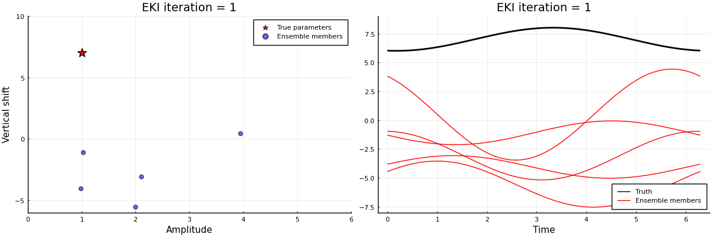

EnsembleKalmanProcesses
EnsembleKalmanProcesses.jl (EKP) is a library of derivative-free Bayesian optimization techniques based on ensemble Kalman Filters, a well known family of approximate filters used for data assimilation. The tools in this library enable fitting parameters found in expensive black-box computer codes without the need for adjoints or derivatives. This property makes them particularly useful when calibrating non-deterministic models, or when the training data are noisy.
Currently, the following methods are implemented in the library:
- Ensemble Kalman Inversion (EKI) - The traditional optimization technique based on the Ensemble Kalman Filter EnKF (Iglesias, Law, Stuart, 2013),
- Ensemble Kalman Sampler (EKS) - also obtains a Gaussian Approximation of the posterior distribution, through a Monte Carlo integration (Garbuno-Inigo, Hoffmann, Li, Stuart, 2020),
- Unscented Kalman Inversion (UKI) - also obtains a Gaussian Approximation of the posterior distribution, through a quadrature based integration approach (Huang, Schneider, Stuart, 2022),
- Sparsity-inducing Ensemble Kalman Inversion (SEKI) - Additionally adds approximate $L^0$ and $L^1$ penalization to the EKI (Schneider, Stuart, Wu, 2020).
| Module | Purpose |
|---|---|
| EnsembleKalmanProcesses.jl | Collection of all tools |
| EnsembleKalmanProcess.jl | Implementations of EKI, EKS, UKI, and SEKI |
| Observations.jl | Structure to hold observational data |
| ParameterDistributions.jl | Structures to hold prior and posterior distributions |
| DataContainers.jl | Structure to hold model parameters and outputs |
| Localizers.jl | Covariance localization kernels |
Learning the amplitude and vertical shift of a sine curve

See full example for the code.
Authors
EnsembleKalmanProcesses.jl is being developed by the Climate Modeling Alliance. The main developers are Oliver R. A. Dunbar and Ignacio Lopez-Gomez.